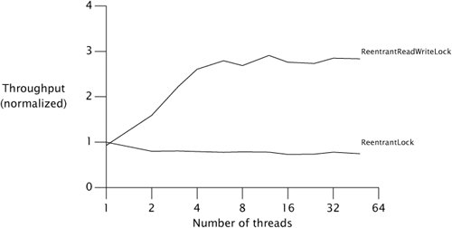

{% include JB/setup %}
{% raw %}
<div>


<a name="ch13lev1sec5" class="calibre18" id="ch13lev1sec5"></a>
<h3 id="647011-821" class="docSection1Title">13.5. Read-write Locks</h3>
<p class="docText1"><tt class="calibre25">ReentrantLock</tt> implements a standard mutual-exclusion lock: at most one thread at a time can hold a <tt class="calibre25">ReentrantLock</tt>. But mutual exclusion is frequently a stronger locking discipline than needed to preserve data integrity, and thus limits concurrency more than necessary. Mutual exclusion is a conservative locking strategy that prevents writer/writer and writer/reader overlap, but also prevents reader/reader overlap. In many cases, data structures are "read-mostly"they are mutable and are sometimes modified, but most accesses involve only reading. In these cases, it would be nice to relax the locking requirements to allow multiple readers to access the data structure at once. As long as each thread is guaranteed an up-to-date view of the data and no other thread modifies the data while the readers are viewing it, there will be no problems. This is what read-write locks allow: a resource can be accessed by multiple readers or a single writer at a time, but not both.</p>
<p class="docText1"><tt class="calibre25">ReadWriteLock</tt>, shown in <a class="calibre2" href="#ch13list06">Listing 13.6</a>, exposes two <tt class="calibre25">Lock</tt> objectsone for reading and one for writing. To read data guarded by a <tt class="calibre25">ReadWriteLock</tt> you must first acquire the read lock, and to modify data guarded by a <tt class="calibre25">ReadWriteLock</tt> you must first acquire the write lock. While there may appear to be two separate locks, the read lock and write lock are simply different views of an integrated read-write lock object.</p>
<a name="ch13list06" class="calibre18" id="ch13list06"></a><h5 id="title-IDAHCUMU" class="docExampleTitle">Listing 13.6. <tt class="calibre33">ReadWriteLock</tt> Interface.</h5><p class="calibre21"><table cellspacing="0" width="90%" border="1" cellpadding="5" class="calibre5"><tr class="calibre6"><td class="calibre28">
<pre class="calibre30">public interface ReadWriteLock {
    Lock readLock();
    Lock writeLock();
}
</pre><br class="calibre11"/>
</td></tr></table></p>
<p class="docText1">The locking strategy implemented by read-write locks allows multiple simultaneous readers but only a single writer. Like <tt class="calibre25">Lock</tt>, <tt class="calibre25">ReadWriteLock</tt> admits multiple implementations that can vary in performance, scheduling guarantees, acquisition preference, fairness, or locking semantics.</p>
<p class="docText1">Read-write locks are a performance optimization designed to allow greater concurrency in certain situations. In practice, read-write locks can improve performance for frequently accessed read-mostly data structures on multiprocessor systems; under other conditions they perform slightly worse than exclusive locks <a name="iddle1187" class="calibre18" id="iddle1187"></a><a name="iddle1971" class="calibre18" id="iddle1971"></a><a name="iddle1972" class="calibre18" id="iddle1972"></a><a name="iddle2329" class="calibre18" id="iddle2329"></a><a name="iddle3133" class="calibre18" id="iddle3133"></a><a name="iddle3141" class="calibre18" id="iddle3141"></a><a name="iddle3806" class="calibre18" id="iddle3806"></a><a name="iddle3820" class="calibre18" id="iddle3820"></a><a name="iddle3839" class="calibre18" id="iddle3839"></a><a name="iddle4130" class="calibre18" id="iddle4130"></a><a name="iddle5019" class="calibre18" id="iddle5019"></a><a name="iddle5020" class="calibre18" id="iddle5020"></a>due to their greater complexity. Whether they are an improvement in any given situation is best determined via profiling; because <tt class="calibre25">ReadWriteLock</tt> uses <tt class="calibre25">Lock</tt> for the read and write portions of the lock, it is relatively easy to swap out a readwrite lock for an exclusive one if profiling determines that a read-write lock is not a win.</p>
<p class="docText1">The interaction between the read and write locks allows for a number of possible implementations. Some of the implementation options for a <tt class="calibre25">ReadWriteLock</tt> are:</p>
<blockquote class="calibre19"><p class="calibre21"></p><p class="docText1"><span class="docEmphStrong">Release preference.</span> When a writer releases the write lock and both readers and writers are queued up, who should be given preferencereaders, writers, or whoever asked first?</p><p class="calibre21"></p><p class="docText1"><span class="docEmphStrong">Reader barging.</span> If the lock is held by readers but there are waiting writers, should newly arriving readers be granted immediate access, or should they wait behind the writers? Allowing readers to barge ahead of writers enhances concurrency but runs the risk of starving writers.</p><p class="calibre21"></p><p class="docText1"><span class="docEmphStrong">Reentrancy.</span> Are the read and write locks reentrant?</p><p class="calibre21"></p><p class="docText1"><span class="docEmphStrong">Downgrading.</span> If a thread holds the write lock, can it acquire the read lock without releasing the write lock? This would let a writer "downgrade" to a read lock without letting other writers modify the guarded resource in the meantime.</p><p class="calibre21"></p><p class="docText1"><span class="docEmphStrong">Upgrading.</span> Can a read lock be upgraded to a write lock in preference to other waiting readers or writers? Most read-write lock implementations do not support upgrading, because without an explicit upgrade operation it is deadlock-prone. (If two readers simultaneously attempt to upgrade to a write lock, neither will release the read lock.)</p></blockquote>
<p class="docText1"><tt class="calibre25">ReentrantReadWriteLock</tt> provides reentrant locking semantics for both locks. Like <tt class="calibre25">ReentrantLock</tt>, a <tt class="calibre25">ReentrantReadWriteLock</tt> can be constructed as nonfair (the default) or fair. With a fair lock, preference is given to the thread that has been waiting the longest; if the lock is held by readers and a thread requests the write lock, no more readers are allowed to acquire the read lock until the writer has been serviced and releases the write lock. With a nonfair lock, the order in which threads are granted access is unspecified. Downgrading from writer to reader is permitted; upgrading from reader to writer is not (attempting to do so results in deadlock).</p>
<p class="docText1">Like <tt class="calibre25">ReentrantLock</tt>, thewrite lock in <tt class="calibre25">ReentrantReadWriteLock</tt> has a unique owner and can be released only by the thread that acquired it. In Java 5.0, the read lock behaves more like a <tt class="calibre25">Semaphore</tt> than a lock, maintaining only the count of active readers, not their identities. This behavior was changed in Java 6 to keep track also of which threads have been granted the read lock. <sup class="docFootnote"><a class="calibre2" href="#ch13fn06">[6]</a></sup></p><blockquote class="calibre19"><p class="docFootnote1"><sup class="calibre27"><a name="ch13fn06" class="calibre18" id="ch13fn06">[6]</a></sup> One reason for this change is that under Java 5.0, the lock implementation cannot distinguish between a thread requesting the read lock for the first time and a reentrant lock request, which would make fair read-write locks deadlock-prone.</p></blockquote>
<p class="docText1"><a name="iddle2167" class="calibre18" id="iddle2167"></a>Read-write locks can improve concurrency when locks are typically held for a moderately long time and most operations do not modify the guarded resources. <tt class="calibre25">ReadWriteMap</tt> in <a class="calibre2" href="#ch13list07">Listing 13.7</a> uses a <tt class="calibre25">ReentrantReadWriteLock</tt> to wrap a <tt class="calibre25">Map</tt> so that it can be shared safely by multiple readers and still prevent reader-writer or writer-writer conflicts.<sup class="docFootnote"><a class="calibre2" href="#ch13fn07">[7]</a></sup> In reality, <tt class="calibre25">ConcurrentHashMap</tt>'s performance is so good that you would probably use it rather than this approach if all you needed was a concurrent hash-based map, but this technique would be useful if you want to provide more concurrent access to an alternate <tt class="calibre25">Map</tt> implementation such as <tt class="calibre25">LinkedHashMap</tt>.</p><blockquote class="calibre19"><p class="docFootnote1"><sup class="calibre27"><a name="ch13fn07" class="calibre18" id="ch13fn07">[7]</a></sup> <tt class="calibre35">ReadWriteMap</tt> does not implement <tt class="calibre35">Map</tt> because implementing the view methods such as <tt class="calibre35">entrySet</tt> and <tt class="calibre35">values</tt> would be difficult and the "easy" methods are usually sufficient.</p></blockquote>
<a name="ch13list07" class="calibre18" id="ch13list07"></a><h5 id="title-IDABLUMU" class="docExampleTitle">Listing 13.7. Wrapping a <tt class="calibre33">Map</tt> with a Read-write Lock.</h5><p class="calibre21"><table cellspacing="0" width="90%" border="1" cellpadding="5" class="calibre5"><tr class="calibre6"><td class="calibre28">
<pre class="calibre30">public class ReadWriteMap&lt;K,V&gt; {
    private final Map&lt;K,V&gt; map;
    private final ReadWriteLock lock = new ReentrantReadWriteLock();
    private final Lock r = lock.readLock();
    private final Lock w = lock.writeLock();

    public ReadWriteMap(Map&lt;K,V&gt; map) {
        this.map = map;
    }

    public V put(K key, V value) {
        <span class="docEmphStrong">w.lock();</span>
        try {
            return map.put(key, value);
        } finally {
            <span class="docEmphStrong">w.unlock();</span>
        }
    }
    <span class="docEmphasis">// Do the same for remove(), putAll(), clear()</span>

    public V get(Object key) {
        <span class="docEmphStrong">r.lock();</span>
        try {
            return map.get(key);
        } finally {
            <span class="docEmphStrong">r.unlock();</span>
        }
    }
    <span class="docEmphasis">// Do the same for other read-only Map methods</span>
}
</pre><br class="calibre11"/>
</td></tr></table></p>
<p class="docText1"><a class="calibre2" href="#ch13fig03">Figure 13.3</a> shows a throughput comparison between an <tt class="calibre25">ArrayList</tt> wrapped with a <tt class="calibre25">ReentrantLock</tt> and with a <tt class="calibre25">ReadWriteLock</tt> on a four-way Opteron system running Solaris. The test program used here is similar to the <tt class="calibre25">Map</tt> performance test we've been using throughout the bookeach operation randomly selects a value and searches for it in the collection, and a small percentange of operations modify the contents of the collection.</p>
<a name="ch13fig03" class="calibre18" id="ch13fig03"></a><p class="calibre21"><div class="calibre12">
<h5 class="docExampleTitle">Figure 13.3. Read-write Lock Performance.</h5>
</div></p><p class="docText1"><div class="v8"><a target="_self" href="13fig03_alt.jpg" class="calibre2">[View full size image]</a></div></p>
<p class="calibre1"> </p>

<p class="calibre1"> </p>

</div>

{% endraw %}

